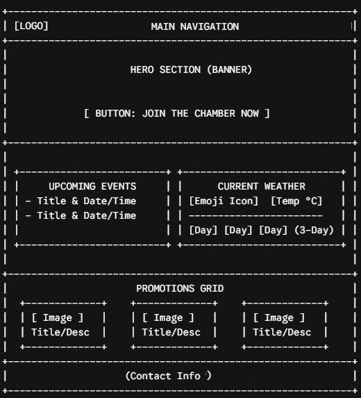
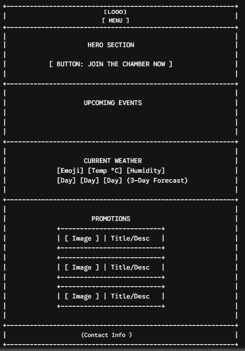

1. Site Name
Name: Café Horizonte
Justification: I chose this name because it evokes the origin of Peruvian specialty coffee, grown in high-altitude zones where the coffee plantations meet the horizon. It represents the pursuit of new quality standards and a peaceful space for the customer.
2. Site Purpose
The purpose of Café Horizonte is to create an interactive and informative web platform for a Peruvian coffee shop. The site digitalizes the customer experience by allowing users to explore a dynamic menu loaded from a data.json file with category filters and CSS hover effects. It aims to move away from static designs to a user-driven tool that responds to client profiles and choices, showcasing brand identity, mission, and vision.
3. Scenarios (Target Audience)
Scenario 1: Where can I see what lunch or dessert choices are available today, check if there are vegetarian options, and see their corresponding prices?
Answer in the site: The user can navigate to the "Products" page, use the interactive category dropdown filter (e.g., Burgers, Desserts, Coffee, Sandwiches), and dynamically view product cards displaying descriptions, prices in Soles (S/.), and special tags.
Scenario 2: I want to celebrate my anniversary next Friday afternoon. How can I secure a table on the terrace without having to make a phone call?
Answer in the site: The client can visit the "Booking" page, fill out the reservation form with their details, select the preferred date, time, and number of guests, and submit the request seamlessly.
4. Color Scheme
The color palette was chosen because it represents the warmth and natural tones of Peruvian coffee:
- Primary Color: #5C3A21 (Roasted Coffee Brown) - It is used in the headers, the navigation bar and other important elements of the page. This color remembers the roasted coffee and helps identify the brand.
- Accent Color: #FF9F00 (Warm Amber / Orange) - Used for important Call-to-Action (CTA) buttons, active navigation items, and key highlights.
- Light Background: #FDFBF7 (Soft Cream) - Used for page sections and card container backgrounds to ensure optimal reading comfort.
5. Typography
Montserrat: Applied to titles, headings and highlighted elements of my interface. Providing an identity, professional and attractive, improving the visual impact of the main sections.
Open Sans: Used for body texts, paragraphs, lists, etc. Allowing a comfortable, legible and accessible experience for the user on different devices and screen sizes.
6. Wireframe
Below is the planned structural layout for both desktop and mobile deployment:
Desktop Layout

Mobile Layout
